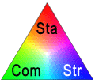
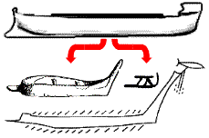

Want to build an ark?
See Ark Modelers for ideas...


Optimal Proportions.
Why ships tend to look like ships. (Interactive)
|
|
 How Noah's Ark may have looked. Prominent and functional stems, Biblical
proportions and structural capability to endure storms in the open
sea. The first ship in our history, the ancestor to the later ships of
ancient seafaring nations... More...
How Noah's Ark may have looked. Prominent and functional stems, Biblical
proportions and structural capability to endure storms in the open
sea. The first ship in our history, the ancestor to the later ships of
ancient seafaring nations... More...

|

|
|
Demonstrated.
Is the rigid sail really necessary? And why the underwater
projection? ... It almost looks like the bulbous bow of a modern
tanker, or is it related to the ramming bow of a Greek trireme?
These features work together to control the Ark, using the wind (Gen
8:1) to maintain direction and avoid broaching. Videos
|

|
|
Clues from Ancient Ships. With Noah's three sons steeped in
marine technology, the emergence of a shipbuilding industry soon
after the Flood should come as no surprise.
So if we see particular traits in ancient ships, the chances are they
may have been derived from the archetype of all ships - Noah's Ark...
More...
|

|
|
Mt Ararat and the search for Noah's Ark. People claim to have seen
it, others allege the photos have been lost. Stories involve
everything from the Russian military to the CIA.
But what evidence do we have today?
How well does Mt Ararat fit with the Bible?
More...
|

|
|
Comparing Noah's Ark. The Great Republic
alongside the smallest possible Ark - based on the very smallest (18 inch)
cubit.
> Section Modulus Comparison here
> Compare more ships here.

|

|
|
Moses Ark?
Everyone knows about Noah's Ark, but what about Moses' Ark?
Same word in the Hebrew.
Does Ark mean Box?
What a fluke!
Proportions are optimal
Size is ideal
Roof Vents are viable
Construction time is sufficient
...even the ceiling height is about right!
So if this is an embellished story of a reed barge on a flooded river, why would the numbers make sense
in a hydrodynamic study?
|